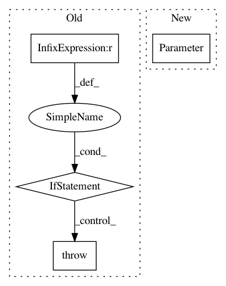

548c67bbe7598c3221b83cf6ef216b848debac2c,parlai/agents/seq2seq/modules.py,OutputLayer,__init__,#OutputLayer#Any#Any#Any#Any#Any#Any#Any#,474
Before Change
self.e2s = nn.Linear(embeddingsize, num_features, bias=True)
else:
// use shared weights and a bias layer instead
if padding_idx == 0:
num_features -= 1 // don"t include padding
shared_weight = shared_weight.narrow(0, 1, num_features)
elif padding_idx > 0:
raise RuntimeError("nonzero pad_idx not yet implemented")
self.weight = Parameter(shared_weight)
self.bias = Parameter(torch.Tensor(num_features))
self.reset_parameters()
self.e2s = lambda x: F.linear(x, self.weight, self.bias)
After Change
if shared_weight is None:
// just a regular linear layer
self.shared = False
self.weight = Parameter(
torch.Tensor(num_features, embeddingsize).normal_(0, 1)
)
else:
// use shared weights and a bias layer instead
self.shared = True
self.weight = shared_weight.weight
In pattern: SUPERPATTERN
Frequency: 3
Non-data size: 4
Instances
Project Name: facebookresearch/ParlAI
Commit Name: 548c67bbe7598c3221b83cf6ef216b848debac2c
Time: 2018-11-15
Author: roller@fb.com
File Name: parlai/agents/seq2seq/modules.py
Class Name: OutputLayer
Method Name: __init__
Project Name: rusty1s/pytorch_geometric
Commit Name: e60669c5aa467d5c11a508c01b37c4ed8e352fa6
Time: 2021-02-15
Author: matthias.fey@tu-dortmund.de
File Name: torch_geometric/nn/conv/supergat_conv.py
Class Name: SuperGATConv
Method Name: __init__
Project Name: cornellius-gp/gpytorch
Commit Name: c63cc933782e2de32c9fe74c18b337b2bbe0f242
Time: 2018-07-19
Author: jrg365@cornell.edu
File Name: gpytorch/kernels/index_kernel.py
Class Name: IndexKernel
Method Name: __init__